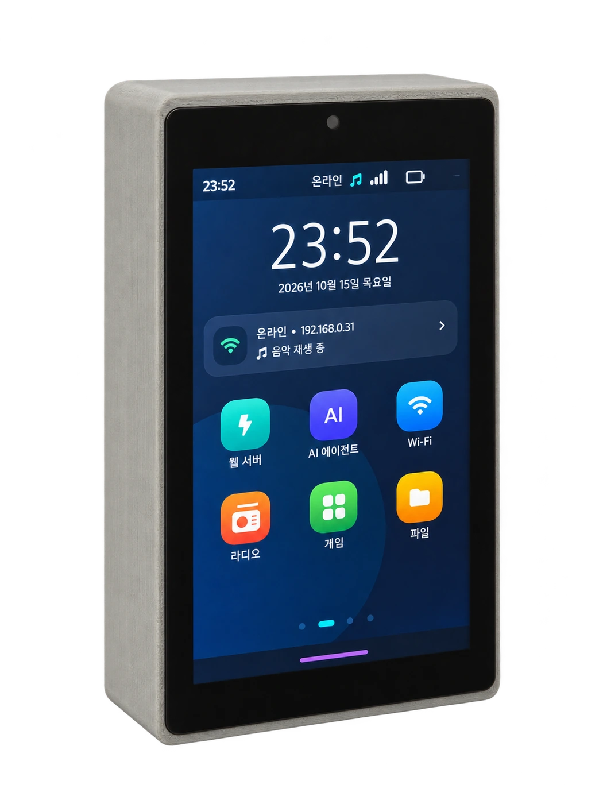
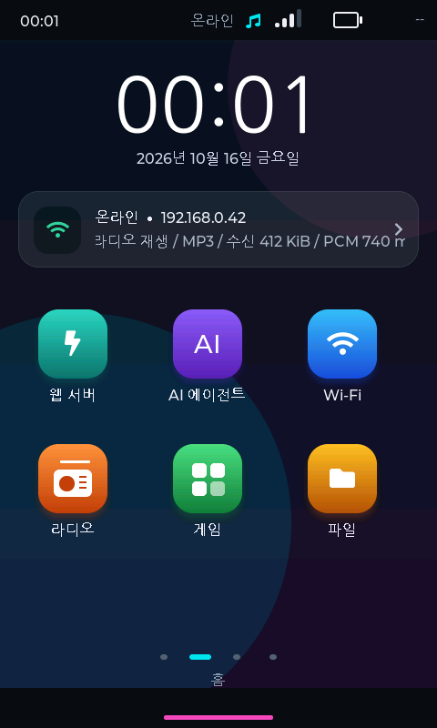

스마트폰처럼 탐색
LVGL 앱 런처와 홈 복귀 제스처로 기능 사이를 이동합니다.
ESP32-P4와 C6, 4.3인치 터치 디스플레이. 웹서버에 앱 런처, 라디오, 갤러리와 음성 기능을 더한 새로운 인터페이스입니다.

ESP32-P4 + C6 ↗스와이프로 앱을 탐색하고, 라디오를 듣고, SD 갤러리를 살펴보세요. 웹 콘텐츠와 터치 경험을 하나의 보드에서 연결합니다.

시계·연결 상태와 앱 탐색
LVGL 앱 런처와 홈 복귀 제스처로 기능 사이를 이동합니다.
ES8311 오디오, 인터넷 라디오와 TTS로 화면 밖까지 경험을 확장합니다.
SD 갤러리와 웹 콘텐츠를 활용하고 Wi-Fi·서버 상태를 화면에서 확인합니다.
M3와 함께 그려보는 활용 아이디어.
시계, 사진과 라디오를 손끝에서 만나세요.
서버 설정과 콘텐츠를 하나의 화면에서 다루세요.
TTS와 외부 AI 연결로 새로운 상호작용을 만들어보세요.
| 기반 보드 | GUITION JC4880P443C_I_W |
|---|---|
| 프로세서 / 무선 | ESP32-P4 / ESP32-C6 |
| 디스플레이 | 4.3인치 IPS · 480×800 · 정전식 터치 |
| 메모리 | 32MB PSRAM · 16MB Flash |
| 오디오 / 저장소 | ES8311 코덱 · 스피커 연결 · microSD |
| 프로젝트 UI | LVGL 9 · 앱 런처 · 한국어 입력 |
프로젝트 소스와 제조사 자료 기준. 기능의 실기기 동작 및 장시간 안정성 검증은 별도입니다. AI·인터넷 라디오 등 온라인 기능은 인터넷 연결과 해당 서비스 설정이 필요합니다.
모델에 맞는 펌웨어와
웹 콘텐츠를 준비하세요.
온보드 화면 또는 SoftAP 설정으로
같은 네트워크에 연결하세요.
안내된 주소를 휴대전화나
PC 브라우저에서 여세요.